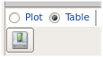
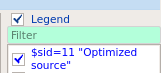

Individual Plot Window
To access: From the Inter-Plots window, undock a plot.
An individual plot window charts a single property across a group of sessions. Undocking the window allows easier access to controls and resizing for legibility.
For a list of all plot types, see “Plot Types”.
Objects
Field |
Description |
|---|---|
1
 |
Plot and Table options. Figure 1 shows the Plot view. The Table view offers the following controls:
|
2
 |
View controls. From left to right, the icons are
|
3
 |
Legend pane. Use this pane to filter sessions (green field) or toggle session plot visibility (the checkboxes). Entering a string in the filter field retains only plot traces that contain the string in their legend name. Clearing the field restores the list of traces to the view. |
4 |
Scroll bars. Move the shaded area along the red line to scroll the zoomed-in plot. (The green line, visible in some plots, indicates where the layout specification for that property is relative to the measurements. If there is no green line in the plot, it means that the property is not set in the Gauge Property Spec Editor window. Click Edit Layout Spec in the session summary table to open the spec editor.) |
5 |
Plot area. Some of the things you can do in this area include:
|
Usage Notes
When an HTML report is generated from the Inter-Plots window, the individual plots are included as displayed at the time the report is created. They are arranged on the HTML page in a grid, but other details reflect the current plot window settings, such as which sessions are visible.
Changes to settings in the Inter-Plots window affect all individual plot windows, even undocked ones.